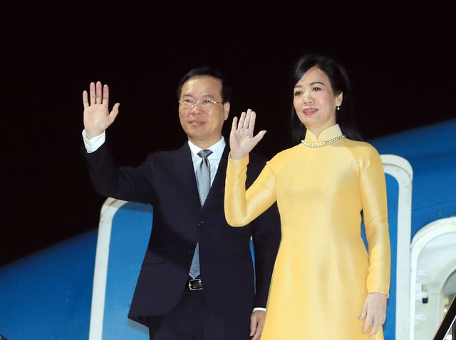
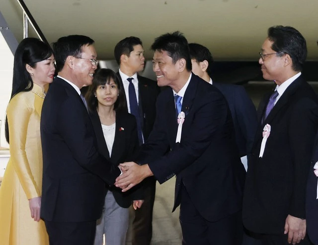
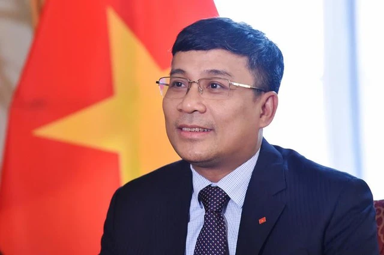

Chuyến thăm góp phần củng cố sự tin cậy chính trị
Khoảng 19 giờ 15 ngày 26.11 (giờ địa phương), tức khoảng 17 giờ 15 chiều cùng ngày theo giờ Việt Nam, Chủ tịch nước Võ Văn Thưởng và phu nhân đã tới sân bay quốc tế Haneda, thủ đô Tokyo, bắt đầu chuyến thăm chính thức Nhật Bản theo lời mời của Nhà nước Nhật Bản.
Chủ tịch nước Võ Văn Thưởng đến Tokyo, bắt đầu chuyến thăm chính thức Nhật Bản - Ảnh 1.
Chủ tịch nước Võ Văn Thưởng và phu nhân đã đến sân bay Haneda, thủ đô Tokyo
Đón Chủ tịch nước Võ Văn Thưởng và phu nhân cùng Đoàn cấp cao Việt Nam tại sân bay quốc tế Haneda và khách sạn có Đại sứ Nhật Bản tại Việt Nam Yamada Takio và phu nhân; lãnh đạo và các quan chức Bộ Ngoại giao Nhật Bản. Về phía Việt Nam có Đại sứ Việt Nam tại Nhật Bản Phạm Quang Hiệu ; cán bộ, nhân viên Đại sứ quán cùng đại diện cộng đồng người Việt Nam đang sinh sống, học tập và làm việc tại Nhật Bản. Trả lời báo chí về chuyến thăm này, Thứ trưởng Bộ Ngoại giao Nguyễn Minh Vũ cho biết, đây là chuyến thăm chính thức Nhật Bản đầu tiên của Chủ tịch nước Võ Văn Thưởng, diễn ra vào dịp hai nước kỷ niệm 50 năm thiết lập quan hệ ngoại giao Việt Nam - Nhật Bản (21.9.1973 - 21.9.2023). "Trong chuyến thăm, Chủ tịch nước dự kiến sẽ hội kiến với Nhà vua và Hoàng hậu Nhật Bản, hội đàm với Thủ tướng Nhật Bản Kishida Fumio, phát biểu chính sách tại Quốc hội Nhật Bản, gặp gỡ, trao đổi với lãnh đạo Quốc hội, đại diện các giới chính trị, kinh tế, khoa học, văn hóa... và thăm tỉnh Fukuoka", ông Vũ chia sẻ. Chủ tịch nước Võ Văn Thưởng đến Tokyo, bắt đầu chuyến thăm chính thức Nhật Bản - Ảnh 2. Lễ đón Chủ tịch nước Võ Văn Thưởng và phu nhân tại sân bay Haneda, thủ đô Tokyo
Thứ trưởng cũng cho biết, chuyến thăm lần này là sự kiện điểm nhấn quan trọng dịp kỷ niệm 50 năm thiết lập quan hệ ngoại giao với 3 ý nghĩa chính. Thứ nhất, chuyến thăm sẽ đưa quan hệ hai nước phát triển lên tầm cao mới thông qua đẩy mạnh hợp tác thực chất, hiệu quả hơn trên mọi lĩnh vực, từ chính trị, kinh tế, thương mại, đầu tư, quốc phòng - an ninh đến hợp tác địa phương, giao lưu nhân dân, đồng thời mở rộng sang các lĩnh vực hợp tác mới, phù hợp với lợi ích của cả hai bên. Thứ hai, chuyến thăm góp phần củng cố sự tin cậy chính trị, tăng cường giao lưu, trao đổi mật thiết giữa Lãnh đạo cấp cao hai nước. "Với chuyến thăm lần này, cả 4 lãnh đạo cấp cao Việt Nam đều đã trao đổi, tiếp xúc với lãnh đạo Nhật Bản trong năm 2023, Tổng Bí thư Nguyễn Phú Trọng đã điện đàm vào tháng 3, Thủ tướng Phạm Minh Chính hội đàm với Thủ tướng Kishida Fumio vào tháng 5, Chủ tịch Quốc hội Vương Đình Huệ hội đàm với Chủ tịch Thượng viện Nhật Bản Otsuji Hidehisa vào tháng 9", Thứ trưởng Ngoại giao cho biết. Thứ ba, trong bối cảnh tình hình quốc tế, khu vực diễn biến nhanh chóng, phức tạp, chuyến thăm là sự khẳng định chính sách đối ngoại của Việt Nam tiếp tục coi Nhật Bản là đối tác quan trọng hàng đầu và lâu dài, mong muốn cùng Nhật Bản phát huy điểm tương đồng về lợi ích vì sự phát triển của mỗi nước cũng như trong việc duy trì hòa bình, ổn định, hợp tác và phát triển ở khu vực. "Với ý nghĩa và tầm quan trọng nói trên, tôi tin tưởng chuyến thăm chính thức Nhật Bản của Chủ tịch nước Võ Văn Thưởng và phu nhân sẽ thành công tốt đẹp, góp phần thúc đẩy quan hệ hợp tác nhiều mặt Việt Nam - Nhật Bản phát triển mạnh mẽ, thực chất và toàn diện trên các lĩnh vực trong thời gian tới", Thứ trưởng Nguyễn Minh Vũ khẳng định. Trang mới cho quan hệ hai nước Thứ trưởng Ngoại giao Nguyễn Minh Vũ khẳng định, hợp tác giữa Việt Nam và Nhật Bản đang trong giai đoạn tốt đẹp và mật thiết nhất trong lịch sử, đơm hoa kết trái, đạt được những thành tựu to lớn trên tất cả các lĩnh vực. Việt Nam tiếp tục coi Nhật Bản là đối tác quan trọng hàng đầu và lâu dài - Ảnh 2. Thứ trưởng Bộ Ngoại giao Nguyễn Minh Vũ
Hai nước luôn coi nhau là đối tác tin cậy, gắn bó chặt chẽ trên nhiều lĩnh vực, trong đó hợp tác kinh tế là điểm sáng với rất nhiều thành tựu nổi bật. Nhật Bản hiện là nhà cung cấp ODA lớn nhất cho Việt Nam (khoảng 30 tỉ USD), đối tác hợp tác lao động thứ 2, du lịch và đầu tư thứ 3 và thương mại thứ 4 của Việt Nam. Hai nước cũng đẩy mạnh hợp tác trong các lĩnh vực mới như đổi mới sáng tạo, khoa học công nghệ, chuyển đổi số, chuyển đổi xanh, năng lượng, ứng phó biến đổi khí hậu... Hợp tác địa phương, giao lưu văn hóa, giao lưu nhân dân có tiến triển tích cực. Trên diễn đàn quốc tế như ASEAN, APEC, Liên Hiệp Quốc..., hai nước luôn hợp tác chặt chẽ, ủng hộ lẫn nhau, chung tay giải quyết các vấn đề quốc tế, khu vực cùng quan tâm. Trên cơ sở hợp tác chặt chẽ, sâu rộng trên các lĩnh vực đó, Thứ trưởng Nguyễn Minh Vũ cho rằng chuyến thăm của Chủ tịch nước Võ Văn Thưởng lần này sẽ góp phần làm sâu sắc hơn quan hệ hợp tác hữu nghị Việt Nam - Nhật Bản, sâu sắc hơn sự tin cậy chính trị, tăng cường tiếp xúc, trao đổi giữa lãnh đạo cấp cao hai nước và lãnh đạo các ban, bộ, ngành, địa phương với đối tác Nhật Bản. Đồng thời, tiếp tục xây dựng hợp tác kinh tế là trụ cột chính của quan hệ hai nước thông qua tăng cường hợp tác đầu tư, ODA, thương mại, lao động, đào tạo nguồn nhân lực..., qua đó giúp Việt Nam thực hiện 3 đột phá chiến lược, công nghiệp hóa, hiện đại hóa, xây dựng nền kinh tế độc lập, tự chủ, hội nhập quốc tế toàn diện, sâu rộng. Việt Nam mong muốn hai nước triển khai có hiệu quả chương trình ODA thế hệ mới, tiếp tục thúc đẩy hợp tác thu hút vốn vay ODA của Nhật Bản trong các lĩnh vực cơ sở hạ tầng, ứng phó với biến đổi khí hậu, đào tạo nguồn nhân lực; thúc đẩy hợp tác đầu tư, thu hút vốn đầu tư thế hệ mới, chất lượng cao của doanh nghiệp Nhật Bản. Bên cạnh đó, hai bên tiếp tục duy trì đà tăng trưởng bền vững của kim ngạch thương mại song phương; phối hợp nâng cao hiệu quả tận dụng và triển khai các thỏa thuận kinh tế giữa hai bên hoặc hai nước đều là thành viên như WTO, APEC, CPTPP, RCEP, AJCEP...; tăng cường hợp tác lao động, đào tạo nguồn nhân lực, nhất là nguồn nhân lực chất lượng cao. Thúc đẩy hợp tác trong các lĩnh vực mới như công nghệ thông tin, đổi mới sáng tạo, chuyển đổi xanh, chuyển đổi số, ứng phó với biến đổi khí hậu. Đẩy mạnh và đưa hợp tác địa phương, du lịch, giao lưu văn hóa, giao lưu nhân dân đi vào chiều sâu, qua đó tăng cường hiểu biết lẫn nhau và tình cảm của người dân Việt Nam - Nhật Bản, giúp xây dựng nền tảng vững chắc để triển khai có hiệu quả hợp tác trên các lĩnh vực giữa hai nước. Tăng cường sự phối hợp chặt chẽ tại các diễn đàn đa phương, tổ chức quốc tế và khu vực như Liên Hiệp Quốc, APEC, ASEAN, Mê Kông.

Đón Chủ tịch nước Võ Văn Thưởng và phu nhân cùng Đoàn cấp cao Việt Nam tại sân bay quốc tế Haneda và khách sạn có Đại sứ Nhật Bản tại Việt Nam Yamada Takio và phu nhân; lãnh đạo và các quan chức Bộ Ngoại giao Nhật Bản. Về phía Việt Nam có Đại sứ Việt Nam tại Nhật Bản Phạm Quang Hiệu ; cán bộ, nhân viên Đại sứ quán cùng đại diện cộng đồng người Việt Nam đang sinh sống, học tập và làm việc tại Nhật Bản. Trả lời báo chí về chuyến thăm này, Thứ trưởng Bộ Ngoại giao Nguyễn Minh Vũ cho biết, đây là chuyến thăm chính thức Nhật Bản đầu tiên của Chủ tịch nước Võ Văn Thưởng, diễn ra vào dịp hai nước kỷ niệm 50 năm thiết lập quan hệ ngoại giao Việt Nam - Nhật Bản (21.9.1973 - 21.9.2023). "Trong chuyến thăm, Chủ tịch nước dự kiến sẽ hội kiến với Nhà vua và Hoàng hậu Nhật Bản, hội đàm với Thủ tướng Nhật Bản Kishida Fumio, phát biểu chính sách tại Quốc hội Nhật Bản, gặp gỡ, trao đổi với lãnh đạo Quốc hội, đại diện các giới chính trị, kinh tế, khoa học, văn hóa... và thăm tỉnh Fukuoka", ông Vũ chia sẻ. Chủ tịch nước Võ Văn Thưởng đến Tokyo, bắt đầu chuyến thăm chính thức Nhật Bản - Ảnh 2. Lễ đón Chủ tịch nước Võ Văn Thưởng và phu nhân tại sân bay Haneda, thủ đô Tokyo

Thứ trưởng cũng cho biết, chuyến thăm lần này là sự kiện điểm nhấn quan trọng dịp kỷ niệm 50 năm thiết lập quan hệ ngoại giao với 3 ý nghĩa chính. Thứ nhất, chuyến thăm sẽ đưa quan hệ hai nước phát triển lên tầm cao mới thông qua đẩy mạnh hợp tác thực chất, hiệu quả hơn trên mọi lĩnh vực, từ chính trị, kinh tế, thương mại, đầu tư, quốc phòng - an ninh đến hợp tác địa phương, giao lưu nhân dân, đồng thời mở rộng sang các lĩnh vực hợp tác mới, phù hợp với lợi ích của cả hai bên. Thứ hai, chuyến thăm góp phần củng cố sự tin cậy chính trị, tăng cường giao lưu, trao đổi mật thiết giữa Lãnh đạo cấp cao hai nước. "Với chuyến thăm lần này, cả 4 lãnh đạo cấp cao Việt Nam đều đã trao đổi, tiếp xúc với lãnh đạo Nhật Bản trong năm 2023, Tổng Bí thư Nguyễn Phú Trọng đã điện đàm vào tháng 3, Thủ tướng Phạm Minh Chính hội đàm với Thủ tướng Kishida Fumio vào tháng 5, Chủ tịch Quốc hội Vương Đình Huệ hội đàm với Chủ tịch Thượng viện Nhật Bản Otsuji Hidehisa vào tháng 9", Thứ trưởng Ngoại giao cho biết. Thứ ba, trong bối cảnh tình hình quốc tế, khu vực diễn biến nhanh chóng, phức tạp, chuyến thăm là sự khẳng định chính sách đối ngoại của Việt Nam tiếp tục coi Nhật Bản là đối tác quan trọng hàng đầu và lâu dài, mong muốn cùng Nhật Bản phát huy điểm tương đồng về lợi ích vì sự phát triển của mỗi nước cũng như trong việc duy trì hòa bình, ổn định, hợp tác và phát triển ở khu vực. "Với ý nghĩa và tầm quan trọng nói trên, tôi tin tưởng chuyến thăm chính thức Nhật Bản của Chủ tịch nước Võ Văn Thưởng và phu nhân sẽ thành công tốt đẹp, góp phần thúc đẩy quan hệ hợp tác nhiều mặt Việt Nam - Nhật Bản phát triển mạnh mẽ, thực chất và toàn diện trên các lĩnh vực trong thời gian tới", Thứ trưởng Nguyễn Minh Vũ khẳng định. Trang mới cho quan hệ hai nước Thứ trưởng Ngoại giao Nguyễn Minh Vũ khẳng định, hợp tác giữa Việt Nam và Nhật Bản đang trong giai đoạn tốt đẹp và mật thiết nhất trong lịch sử, đơm hoa kết trái, đạt được những thành tựu to lớn trên tất cả các lĩnh vực. Việt Nam tiếp tục coi Nhật Bản là đối tác quan trọng hàng đầu và lâu dài - Ảnh 2. Thứ trưởng Bộ Ngoại giao Nguyễn Minh Vũ

Hai nước luôn coi nhau là đối tác tin cậy, gắn bó chặt chẽ trên nhiều lĩnh vực, trong đó hợp tác kinh tế là điểm sáng với rất nhiều thành tựu nổi bật. Nhật Bản hiện là nhà cung cấp ODA lớn nhất cho Việt Nam (khoảng 30 tỉ USD), đối tác hợp tác lao động thứ 2, du lịch và đầu tư thứ 3 và thương mại thứ 4 của Việt Nam. Hai nước cũng đẩy mạnh hợp tác trong các lĩnh vực mới như đổi mới sáng tạo, khoa học công nghệ, chuyển đổi số, chuyển đổi xanh, năng lượng, ứng phó biến đổi khí hậu... Hợp tác địa phương, giao lưu văn hóa, giao lưu nhân dân có tiến triển tích cực. Trên diễn đàn quốc tế như ASEAN, APEC, Liên Hiệp Quốc..., hai nước luôn hợp tác chặt chẽ, ủng hộ lẫn nhau, chung tay giải quyết các vấn đề quốc tế, khu vực cùng quan tâm. Trên cơ sở hợp tác chặt chẽ, sâu rộng trên các lĩnh vực đó, Thứ trưởng Nguyễn Minh Vũ cho rằng chuyến thăm của Chủ tịch nước Võ Văn Thưởng lần này sẽ góp phần làm sâu sắc hơn quan hệ hợp tác hữu nghị Việt Nam - Nhật Bản, sâu sắc hơn sự tin cậy chính trị, tăng cường tiếp xúc, trao đổi giữa lãnh đạo cấp cao hai nước và lãnh đạo các ban, bộ, ngành, địa phương với đối tác Nhật Bản. Đồng thời, tiếp tục xây dựng hợp tác kinh tế là trụ cột chính của quan hệ hai nước thông qua tăng cường hợp tác đầu tư, ODA, thương mại, lao động, đào tạo nguồn nhân lực..., qua đó giúp Việt Nam thực hiện 3 đột phá chiến lược, công nghiệp hóa, hiện đại hóa, xây dựng nền kinh tế độc lập, tự chủ, hội nhập quốc tế toàn diện, sâu rộng. Việt Nam mong muốn hai nước triển khai có hiệu quả chương trình ODA thế hệ mới, tiếp tục thúc đẩy hợp tác thu hút vốn vay ODA của Nhật Bản trong các lĩnh vực cơ sở hạ tầng, ứng phó với biến đổi khí hậu, đào tạo nguồn nhân lực; thúc đẩy hợp tác đầu tư, thu hút vốn đầu tư thế hệ mới, chất lượng cao của doanh nghiệp Nhật Bản. Bên cạnh đó, hai bên tiếp tục duy trì đà tăng trưởng bền vững của kim ngạch thương mại song phương; phối hợp nâng cao hiệu quả tận dụng và triển khai các thỏa thuận kinh tế giữa hai bên hoặc hai nước đều là thành viên như WTO, APEC, CPTPP, RCEP, AJCEP...; tăng cường hợp tác lao động, đào tạo nguồn nhân lực, nhất là nguồn nhân lực chất lượng cao. Thúc đẩy hợp tác trong các lĩnh vực mới như công nghệ thông tin, đổi mới sáng tạo, chuyển đổi xanh, chuyển đổi số, ứng phó với biến đổi khí hậu. Đẩy mạnh và đưa hợp tác địa phương, du lịch, giao lưu văn hóa, giao lưu nhân dân đi vào chiều sâu, qua đó tăng cường hiểu biết lẫn nhau và tình cảm của người dân Việt Nam - Nhật Bản, giúp xây dựng nền tảng vững chắc để triển khai có hiệu quả hợp tác trên các lĩnh vực giữa hai nước. Tăng cường sự phối hợp chặt chẽ tại các diễn đàn đa phương, tổ chức quốc tế và khu vực như Liên Hiệp Quốc, APEC, ASEAN, Mê Kông.